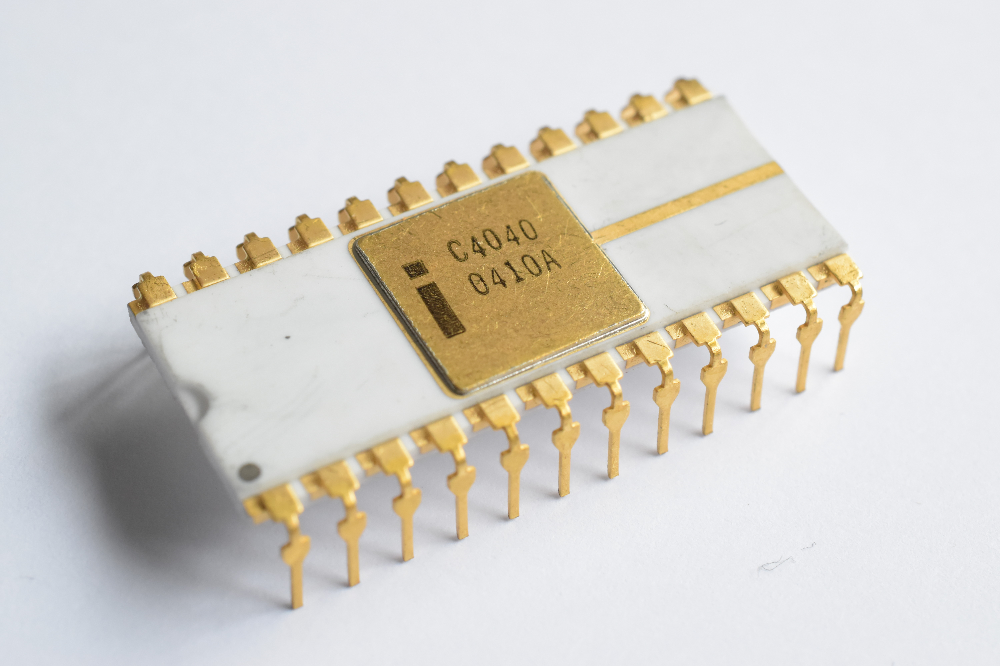
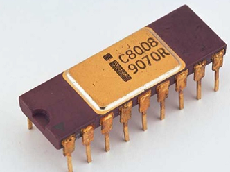
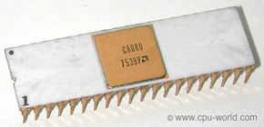
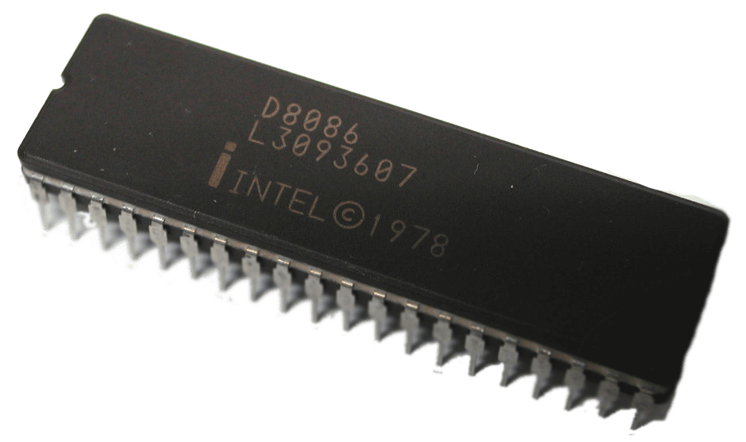
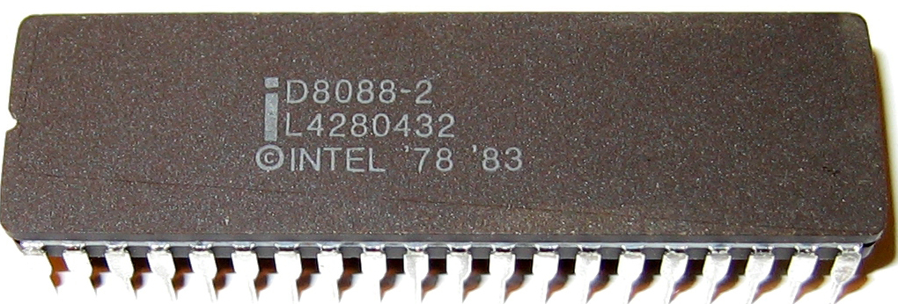

 El Intel 4040 fue el sucesor del Intel 4004. Fue lanzado al mercado en 1974. Diseñado por Federico Faggin (quien propuso la arquitectura y condujo el proyecto) y Tom Innes. El 4040 fue usado primariamente en juegos, pruebas, desarrollo, y equipos del control. El paquete del 4040 era más de dos veces el ancho del 4004 y tenía 24 pines en lugar de los 16 del 4004. El 4040 agregó 14 instrucciones, un espacio más grande para el stack (7 niveles en vez de 3), un espacio para programas de 8kB, 8 registros adicionales, y habilidades de interrupción (incluyendo sombras (shadows) de los primeros 8 registros). La familia 4040 es también referida como el MCS-40.
 El Intel 8008 (i8008) es un microprocesador diseñado y fabricado por Intel que fue lanzado al mercado en abril de 1972. Codificado inicialmente como 1201, fue pedido a Intel por Computer Terminal Corporation para usarlo en su terminal programable Datapoint 2200, pero debido a que Intel terminó el proyecto tarde y a que no cumplía con la expectativas de Computer Terminal Corporation, finalmente no fue usado en el Datapoint 2200. Posteriormente Computer Terminal Corporation e Intel acordaron que el i8008 pudiera ser vendido a otros clientes. [cita requerida] El conjunto de instrucciones del i8008 y de todos los procesadores posteriores de Intel está fuertemente basado en las especificaciones de diseño de Computer Terminal Corporation. El i8008 emplea direcciones de 14 bits,2 pudiendo direccionar hasta 16 KB de memoria. El circuito integrado del i8008, limitado por las 18 patillas de su encapsulado DIP, tiene un bus compartido de datos y direcciones de 8 bits, por lo que necesita una gran cantidad de circuitería externa para poder ser utilizado. El i8008 puede acceder a 8 puertos de entrada y 24 de salida. Aunque un poco más lento que los microprocesadores Intel 4004 e Intel 4040 de 4 bits en cuanto a la cantidad de millones de instrucciones por segundo ejecutadas, el hecho de que el i8008 procesara 8 bits de datos al tiempo y de que pudiera acceder a mucha más memoria hacen que el i8008 sea en la práctica unas tres o cuatro veces más rápido que sus predecesores de 4 bits. El i8008 era un diseño aceptable para utilizarlo como el controlador de un terminal, pero no para el resto de tareas, por lo que pocos ordenadores se basaron en él. La mayoría de los ordenadores de la época emplearon el mejorado Intel 8080.
 El Intel 8080 fue un microprocesador temprano diseñado y fabricado por Intel. La CPU de 8 bits fue lanzada en abril de 1974. Corría a 2 MHz, y generalmente se lo considera el primer diseño de microprocesador verdaderamente útil. Varios fabricantes importantes fueron segundas fuentes para el procesador, entre los cuales estaban AMD, Mitsubishi, NatSemi, NEC, Siemens, y Texas Instruments. También en el bloque oriental se hicieron varios clones sin licencias, en países como la Unión de Repúblicas Socialistas Soviéticas y la República Democrática de Alemania.
 El Intel 8086 y el Intel 8088 (i8086, llamados oficialmente iAPX 86, e i8088) son los primeros microprocesadores de 16 bits diseñados por Intel. Fueron el inicio y los primeros miembros de la arquitectura x86. El trabajo de desarrollo para el 8086 comenzó en la primavera de 1976 y fue lanzando al mercado en el verano de 1978. El 8088 fue lanzado en 1979. El 8086 y el 8088 ejecutan el mismo conjunto de instrucciones. Internamente son idénticos, excepto que el 8086 tiene una cola de 6 bytes para instrucciones y el 8088 de sólo 4. Exteriormente se diferencian en que el 8086 tiene un bus de datos de 16 bits y el del 8088 es de sólo 8 bits, por ello, el 8086 era más rápido. Por otro lado, el 8088 podía usar menos circuitos lógicos de soporte, lo que permitía la fabricación de sistemas más económicos. El 8088 fue el microprocesador usado para el primer computador personal de IBM, el IBM PC, que salió al mercado en agosto de 1981. Hay que tener en cuenta que la mayoría del hardware, de principios de los 80, era de 8 bits, y más barato. El hardware de 16 bits era casi inexistente en 1981 y carísimo.
 El 8088 fue diseñado en Israel, en el laboratorio Intel de Haifa, al igual que un gran número de otros procesadores Intel. En 1972, Intel lanzó el 8008, el primer microprocesador de 8 bits.1 El 8008 implementó un conjunto de instrucciones diseñado por la corporación Datapoint la cual tenía en mente hacer terminales de CRT programables. El 8008 también demostró ser bastante de propósito general. El dispositivo necesitó varios circuitos integrados adicionales para producir un computador funcional, en parte debido a su pequeño "paquete de memoria" de 18 pines, que eliminó el uso de un bus de direcciones separado (En ese tiempo, Intel era primariamente un fabricante de DRAM). Dos años más tarde, en 1974, Intel lanzó el 8080,2 empleando los nuevos paquetes DIL de 40 pines desarrollados originalmente para circuitos integrados de calculadora para permitir un bus de direcciones separado. Tenía un conjunto de instrucciones extendido que era compatible a nivel de código fuente, no de código de máquina binario, con el 8008 y también incluyó algunas instrucciones de 16 bits para hacer la programación más fácil. El dispositivo 8080, con frecuencia descrito como el primer microprocesador verdaderamente útil, fue finalmente sustituido por el 8085, basado en tecnología depletion-load NMOS (1977) que podía trabajar con una sola fuente de alimentación de 5V en vez de los tres diferentes voltajes de funcionamiento de los chips anteriores.3 Otros microprocesadores de 8 bits bien conocidos que emergieron durante estos años fueron el Motorola 6800 (1974), MOS Technology 6502 (1975), Zilog Z80 (1976), y Motorola 6809 (1978), así como otros.
Desarrollador= Santiago Herbes